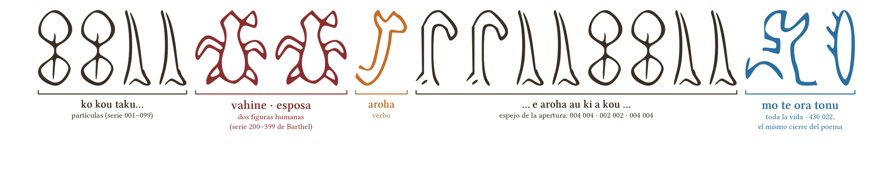
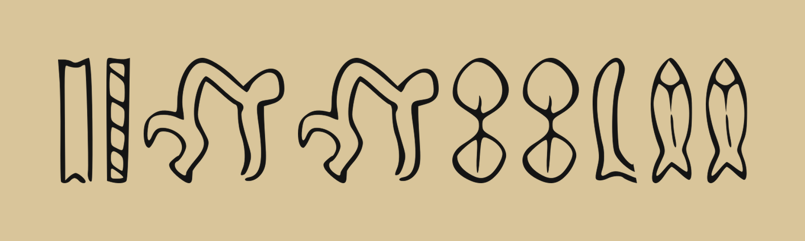
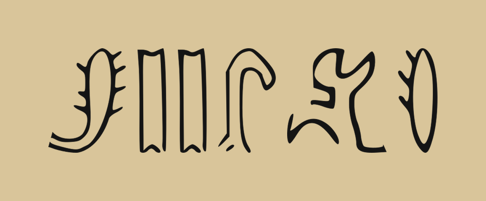

Dijo que sí.
Rapa Nui · una pregunta en 17 glifos
La tablilla de la petición

Ko kou taku vahine, e aroha au ki a kou, mo te ora tonu
«Tú eres mi esposa; te amo para toda la vida.»
Clave de lectura


I te motu, i mua o te moana
«En la isla, frente al mar»
el mar cayó en la serie de los peces (700)

Mo te ora tonu
«Para toda la vida»
la única frase en la que los dos modelos coincidieron glifo por glifo
Glifos: trazados reales del corpus rongorongo (tablillas A–F, transcripción Barthel) · Secuencias: hipótesis C2 generadas por el modelo, no traducción histórica demostrada · github.com/satisfymath/spectral-submersion
María Ignacia: mo te ora tonu ❤